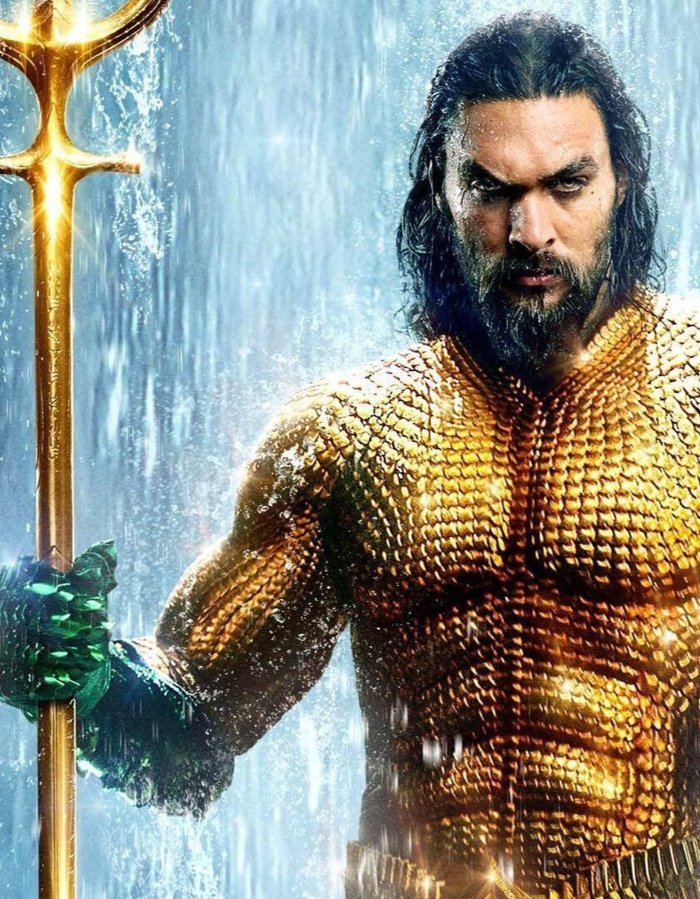

AQUAMAN / ARTHUR CURRY
Aquaman ou Homem-Aquático é um super-herói das histórias em quadrinhos americanas da DC Comics. Criado por Paul Norris e Mort Weisinger, o personagem estreou na revista More Fun Comics #73 (novembro de 1941, apesar de constar na capa "novembro", More Fun Comics #73 chegou às bancas dos EUA em 25 de setembro de 1941.). Inicialmente um herói secundário em títulos da antologia da DC, Aquaman depois estrelou em vários volumes como herói principal.Aquaman foi adaptado para as telas muitas vezes, aparecendo pela primeira vez na animação de 1967, The Superman/Aquaman Hour of Adventure e, em seguida, no programa relacionado com os Super Friends. Desde então, ela tem aparecido em várias animações produzidas, incluindo papéis proeminentes nas séries dos anos 2000, Justice League Unlimited e Batman: The Brave and the Bold, bem como nos vários filmes do DC Universe Animated Original Movies. O ator Alan Ritchson também interpretou o papel no live-action para a série de televisão Smallville. Jason Momoa interpretou o personagem no filme Liga da Justiça (2017) e retoma o papel no filme solo Aquaman, de 2018. Na década de 1990, a Era Moderna dos Quadrinhos, o personagem Aquaman tornou-se mais sério do que na maioria das interpretações anteriores, com enredos que descrevem o peso de seu papel como o rei da Atlântida.